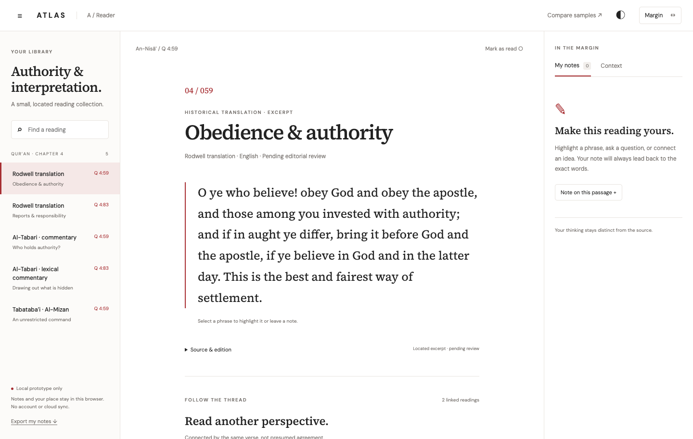
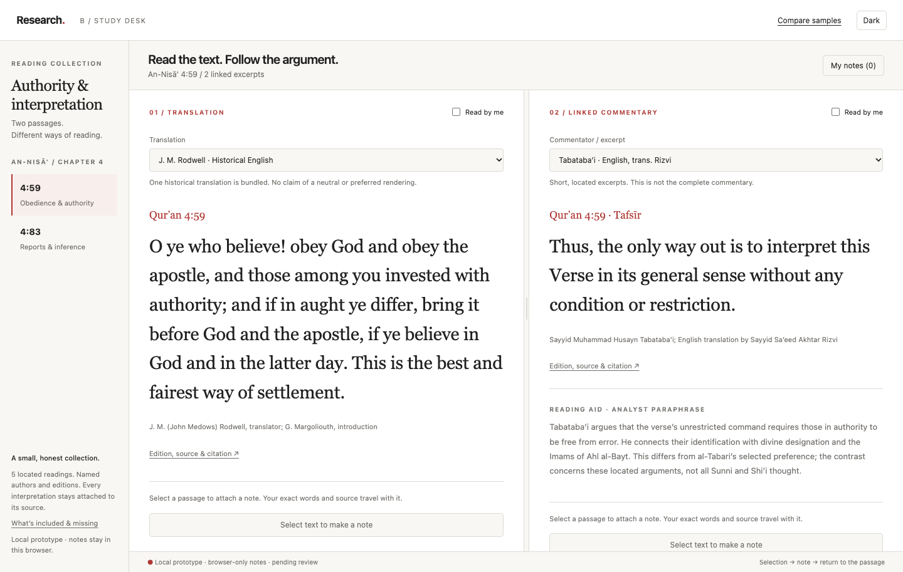
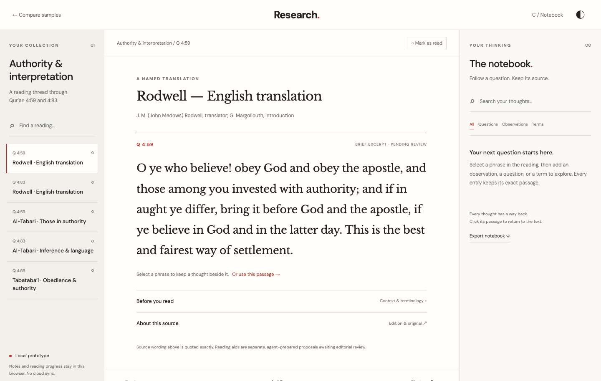

A / Read without interruption
Reader
A quiet reading page. Your library to one side, notes and context to the other.
Try ReaderSame sources. Three approaches.
Read a passage. Leave a thought. Follow the source.
Try each workspace and see which keeps you in the flow.

A / Read without interruption
A quiet reading page. Your library to one side, notes and context to the other.
Try Reader
B / Follow the commentary
Keep a verse and its commentary together. Change sources without losing the thread.
Try Study desk
C / Develop your thinking
Read beside your questions and observations. Every quoted thought can take you back.
Try Notebook